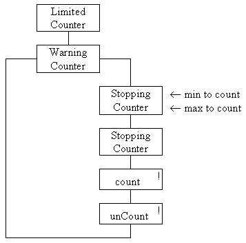

The WarningCounter class differs from the two previous classes at the limits of its ranges by throwing an exception if an attempt is made to count() above or unCount() below its range. This has to be shown on the class diagram as follows.

The exclamation mark in the top right hand corner of the actions indicate that they might throw an exception when they are used.
The implementation of the constructors does not differ from the previous two classes.